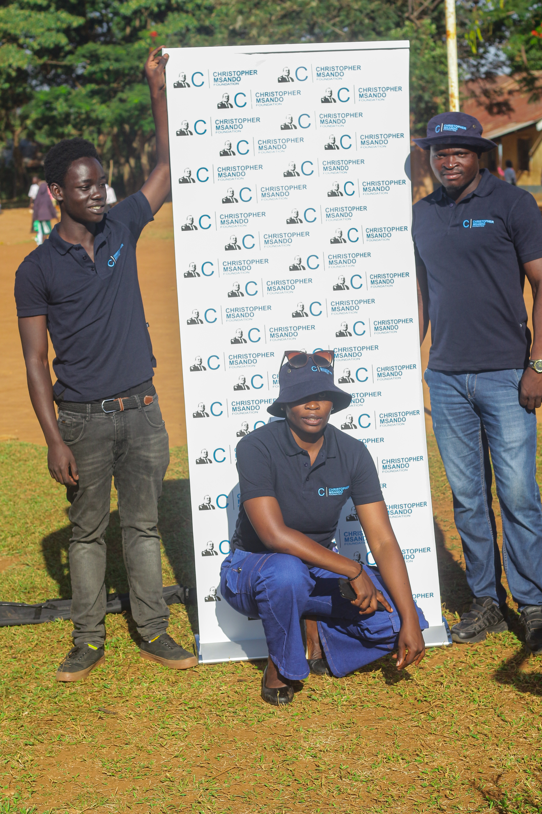
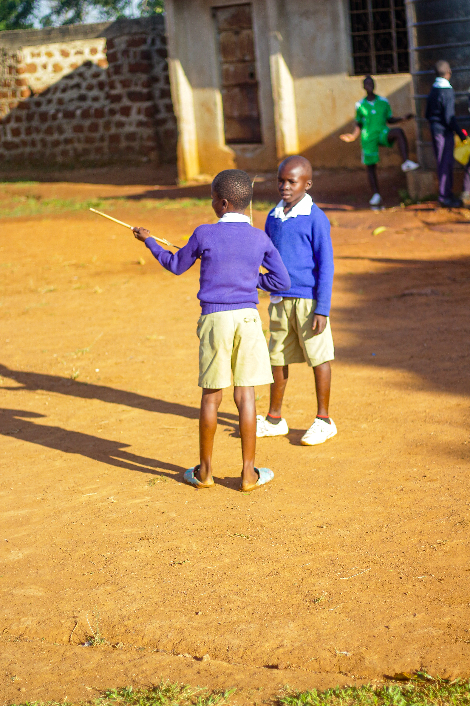

01
Who We Are
A Kenyan foundation supporting children, youth and communities through skills, mentorship, talent development and practical opportunities.
We create opportunities for children, young people and communities to develop their talents, strengthen practical skills and shape a more self-reliant future.
What we focus on

Real moments
from our community
Rooted in Kenya
Working with children, youth and communities in Nairobi, Siaya and beyond.
The Christopher Msando Foundation advances causes Christopher believed in by opening pathways for young people and communities to learn, create, lead and thrive.
01
A Kenyan foundation supporting children, youth and communities through skills, mentorship, talent development and practical opportunities.
02
To nurture potential, expand access to opportunity and equip people to build lives and communities of purpose and dignity.
03
Thriving communities where every young person can develop their abilities, participate fully and create a sustainable future.
In his honour
Carrying his values forward since 28 July 2017.
Christopher Msando was the Information Communication Technology (ICT) Manager at Kenya's Independent Electoral and Boundaries Commission (IEBC) at the time of his death on 28 July 2017.
He is remembered as hardworking, keen on detail, resilient, honest and forthright, decisive, an initiator, loving and empathetic. The Foundation was established in his honour to advance the causes he believed in.
Talent Development
Discovering potential and creating room for it to grow.
Sports Development
Building confidence, teamwork and healthy participation.
Empowerment
Connecting people with skills, mentorship and opportunity.
Sustainability
Supporting practical, locally led paths to self-reliance.

Our work happens on school grounds and in neighbourhoods, side by side with the children, families and teachers we serve.
Shared meals
Bringing children together around a warm meal and a day of activities.
Community days bring our team and volunteers to schools for shared meals, games and time together, creating space for children to feel seen, supported and encouraged.


We work with schools and parents to put practical essentials in the hands of learners, removing small barriers that stand between children and their potential.

Hand in hand
Support delivered with dignity, directly to families.
Our programmes turn purpose into action, helping people build ability, confidence, connection and a foundation for lasting progress.

We help children and young people discover their strengths, develop discipline and gain platforms to participate and shine.

Mentorship, digital learning and practical skills connect underserved people with knowledge and opportunity.

Community-led projects in environmental care, agriculture and practical livelihoods strengthen long-term resilience.
Moments from activities, learning sessions and community engagements. Select an image to view it in full.
Whether you bring time, expertise, resources or partnership, there is a place for you in this work.
Partner With CM
Explore collaboration as an institution, business or community group.
Shop at Our Store
Discover CM items and support the Foundation through every purchase.
Stay connected with CM and be the first to hear about our programmes, upcoming activities, community initiatives, opportunities and the impact we are creating together.
Quick answers about how to support the Foundation. For anything else, our team is happy to help.
Contact UsWe accept support via bank transfer, M-Pesa and PayPal. Email info@christophermsandofoundation.org and we will share the details for your preferred option.
Yes. Volunteers share life experiences and skills with children and youth, and grow through the work too. Get in touch through the Get Involved section to start a conversation.
We welcome collaboration with institutions, businesses and community groups, including corporate support. Reach out and we will explore what fits best.
Please contact us with the details and we will help you arrange a gift made in someone's name.